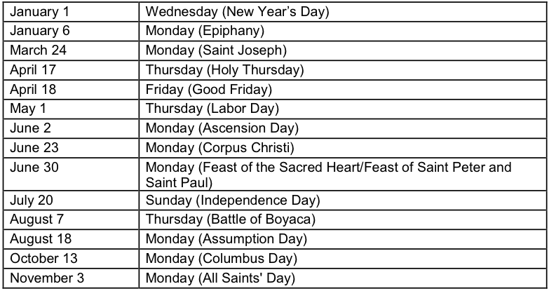
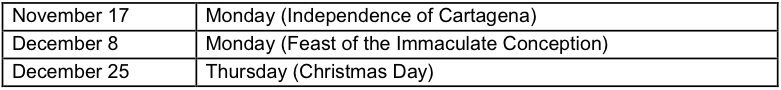

Colombian time is the same as U.S. Eastern Standard time, without daylight-saving adjustments, e.g. Washington time in winter, Chicago time in summer.
The workweek is Monday - Friday. Normal working hours are 8 a.m. – 5 p.m. with lunch being taken at 12 noon or 1 p.m. Alternative hours may be 7:30 a.m. - 4:30 or 8:30 a.m. - 5:30 p.m. with an hour for lunch. In coastal cities such as Cartagena, many offices and manufacturing operations also work half-day on Saturday, with a two hour lunch break during the work week.
Shopping: Most stores are open between 9:00 a.m. and 7:00 or 8:00 p.m. on weekdays, and between 9:00 a.m. and 8:00 p.m. or 9:00 p.m. on Saturdays. Some food stores and restaurants (but very few other establishments) are open on Sundays and holidays. It is sometimes possible to negotiate a discount at some stores when paying in cash.
Prior to planning business travel, it is advisable to consult the schedule of Colombian holidays. It is strongly recommended that business trips be avoided during Holy Week (the week before Easter) and the Christmas holiday season (December 17 to January 15). Visitors may also find it difficult to make business appointments during “puentes” (Fridays or Mondays which “bridge” the weekends with official holidays falling on Thursdays or Tuesdays.)
Colombia’s official holiday calendar for 2014 is as follows:


Regional Holidays: February 9 through February 11, (Carnival), Barranquilla. December 24 through December 31, 2013 (Folklore Festival), Cali: Offices open only from 8:00 am - 12:00 noon.
The U.S. Embassy in Bogota observes U.S. government holidays as well as Colombian holidays.